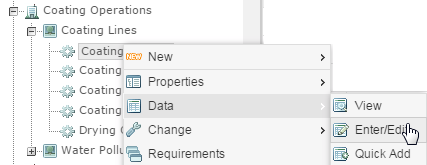

Material Activity data is entered by location. To enter data, you select a single activity and one or more selected materials. Calculations are triggered for all Material Activity Calculated Requirements that share the same activity and materials under that location.
You can enter material activity data in three ways. Initial instructions for entering data are given below. See these sections for more specific instructions.
Material Activity Data Quick Add
Material Activity Data Entry via HTML
Material Activity Data Upload via Excel
To enter data for Material Activity calculations:
Right click and chooseData > Quick Add or Data > Enter/Edit.

If the parent object contains both numeric parameters and Material Activity calculations, select Material Activity for the data type. This step is skipped if there are no parameters at the same location.